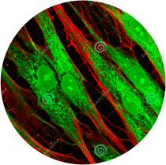

Fluorescent Dyes

A new spin-off of Click Chemistry Tools called Fluoroprobes, is creating generic versions of fluorescent dyes. Our lab recently switched from buying Alexa Fluor® 647 NHS Ester from Thermo Fisher ($339/1mg) to the generic AF 647 NHS Ester from Fluroprobes ($139/1mg). Saves us quite a bit of $$$.
We use this dye to label proteins and the efficiency of the labelling reaction was ~50% for both brands. So far, no complaints from switching to the generic. We have also used AF 488-DBCO from Click Chemistry Tools with great results in both efficiency and brightness.